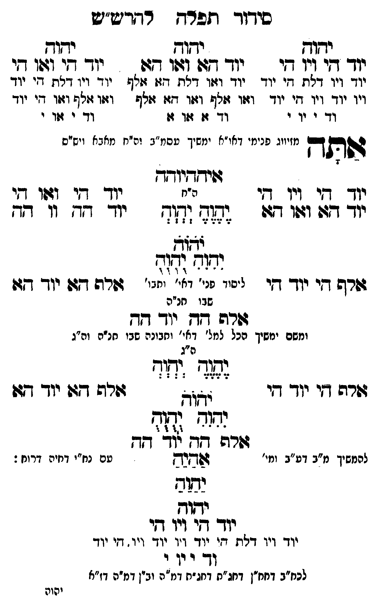

Neue Klartextfassung
=== טבלה === [טור ימין] יהוה יוד הי ויו הי יוד ויו דלת הי יוד ויו יוד ויו הי יוד וד י וי י [טור אמצעי] יהוה יוד הא ואו הא יוד ואו דלת הא אלף ואו אלף ואו הא אלף וד א או א [טור שמאל] יהוה יוד הי ואו הי יוד ויו דלת הי יוד ואו אלף ואו הי יוד וד י או י === סוף טבלה === אתה [מזיווג פנימי דאו"א ימשך עסמ"ב ונרנח"י דחכמה ויש"ס] איההיוהה === טבלה === [טור ימין] יוד הי ויו הי יוד הא ואו הא אלף הי יוד הי [טור אמצעי] [ה"ח] יֶהֶוֶהֶ יְהְוְהְ יֹהֹוֹהֹ יִהִוִהִ יֻהֻוֻהֻ [ליסוד פני' דאי' ותבו' שבו חו"ח] [טור שמאל] יוד הי ואו הי יוד הה וו הה אלף הא יוד הא === סוף טבלה === אלף הה יוד הה [ומשם ימשך הכל למל' דאי' ותבונה שבו חו"ח וה"ג] === טבלה === [טור ימין] אלף הי יוד הי [טור אמצעי] [ה"ג] יֶהֶוֶהֶ יְהְוְהְ יֹהֹוֹהֹ יִהִוִהִ יֻהֻוֻהֻ [טור שמאל] אלף הא יוד הא === סוף טבלה === אלף הה יוד הה [להמשיך מ"ב דע"ב ומי' עם נח"י דחיה דרוח:] אַהַיַהַ יַהַוַהַ יהוה יוד הי ויו הי יוד ויו דלת הי יוד ויו יוד ויו הי יוד וד י וי י [לכח"ב דחח"ן דחג"ת דחג"ת דמ"ה וב"ן דמ"ה דז"א]
Original gegen neue OCR · Niqqud für Vergleich ausgeblendet
Original
=== טבלה === [טור ימין] יהוה יוד הי ויו היK087-001 יוד ויו ∅K087-002 דלת היK087-003 יוד ויו יוד ויו היK087-004 יוד ודK087-005 י ויK087-006 י [טור אמצעי] יהוהK087-007 יוד הא ואו הא יוד ואו דלת הא אלף ואו אלף ואו הא אלף וד א או א [טור שמאל] יהוה יוד הי ואו הי יוד ויו דלת הי יוד ואו אלף ואו הי יוד וד י או י === סוף טבלה === אתה [מזיווג פנימי דאו"א ימשך עסמ"ב ונרנח"י דחכמה ויש"ס] איההיוהה === טבלה === [טור ימין] יוד הי ויו הי יוד הא ואו הא אלף הי יוד הי [טור אמצעי] [ה"ח] יהוה יהוה יהוה יהוה יהוה [ליסודK087-008 פני' דאי' ותבו'K087-009 שבו חו"ח] [טור שמאל] יוד הי ואו הי יוד הה וו הה אלף הא יוד הא === סוף טבלה === אלף הה יוד הה [ומשם ימשךK087-010 הכל למל' דאי' ותבונהK087-011 שבו חו"ח וה"ג] === טבלה === [טור ימין] אלף היK087-012 יוד הי [טור אמצעי] [ה"ג] יהוה יהוה יהוה יהוה יהוה [טור שמאל] אלף הא יוד הא === סוף טבלה === אלף הה יוד הה [להמשיךK087-013 מ"ב דע"ב ומי' ∅K087-014 עם נח"י דחיה דרוח:] אהיהK087-015 יהוה יהוה יוד היK087-016 ויו היK087-017 יוד ויו דלת היK087-018 יוד ויו יוד ויו היK087-019 יוד ודK087-020 י וי י [לכח"בK087-021 דחח"ן דחג"ת דחג"תK087-022 דמ"ה וב"ןK087-023 דמ"ה דז"א]K087-024
OCR · fehlbar
סיךווך תלרח רדדש"ש יזו ידוד ישוד יוך ד[י ון יי יוך דז (:הו 777. יו די וגו דזיK087-001 יוד ויו דלח חי יוד יוד וצו'K087-002 דלת דז: ז(לף יוד ויו דאח דיK087-003 יוד ויו יוד ויו דיK087-004 יוד וזיו גליף וזוו דזו זזלף וזיו זולף וזזו די יוד ו-K087-005 י ידK087-006 י דד גו 740 14 דד- י גוד י יווג פני. דאר"א ימשיך טסמ"ג וה"ח מאבא -ישי הפותך מזיווג פנימ' דאו"א ימשיך עסמ": וה"ח מאבא ויש"ס גזידקדזיודך יוך חי ויו י נ"ח יודך ד[י וגו די יוך דג וזזו 47: 37( (7[- יו- ז' ו. --7 דש מצוד גורש דיK087-007 יוד דקי ליסייK087-008 פני' וי' יזגי' זורה דזו יוך דגשK087-009 שבו חנ"ה שרה גד יי- דד ומשם ימשיךK087-010 הכל למל' דאי' וחבונהK087-011 שבו חנ"ה וה"ג ה"ג 243212422 זשרה וזי יוך די אא זורה דג: יוך ח כחד. ((ז- גזרש 7וK087-012 יוד דד להמשיךK087-013 מ"ב דע"ב ומי' חנקK087-014 עם נח"י דחיה דרוח: נמושזK087-015 יהוה יודך שיK087-016 ויו דקיK087-017 יוד ויו דלח חזיK087-018 יוד ויו יוד ויו. חיK087-019 יוד (- ו וךK087-020 י לכח"בK087-021 דחח"ן דחג"ת דחגחK087-022 דמ"ה וביןK087-023 דמ"ה דז"א יהותK087-024